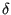
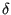

Keyword type: step
This option is used to print selected nodal variables in file jobname.frd for subsequent viewing by CalculiX GraphiX. The following variables can be selected (the label is square brackets [] is the one used in the .frd file; for frequency calculations with cyclic symmetry both a real and an imaginary part may be stored, in all other cases only the real part is stored):
The selected variables are stored for the complete model.
The external forces (key RF) are the sum of the reaction forces, concentrated loads (*CLOAD) and distributed loads (*DLOAD) in the node at stake. Only in the absence of concentrated loads in the node and distributed loads in any element to which the node belongs, the external forces reduce to the reaction forces. Forces induced by multiple point constraints are not calculated. Since single point constraints defined in transformed coordinates are converted into multiple point constraints in the global rectangular system, the force in a node in which a SPC is defined in local coordinates are not correctly delivered upon using the RF key in combination with the *NODE PRINT keyword card.
For frequency calculations with cyclic symmetry the eigenmodes are generated in pairs (different by a phase shift of 90 degrees). Only the first one of each pair is stored in the frd file. If U is selected (the displacements) two load cases are stored in the frd file: a loadcase labeled DISP containing the real part of the displacements and a loadcase labeled DISPI containing the imaginary part of the displacements. For all other variables only the real part is stored.
The first occurrence of an *NODE FILE keyword card within a step wipes out all previous nodal variable selections for file output. If no *NODE FILE card is used within a step the selections of the previous step apply. If there is no previous step, no nodal variables will be stored.
Notice that only values in nodes belonging to elements are stored. Values in nodes not belonging to any element (e.g. the rotational node in a *RIGID BODY option) can only be obtained using *NODE PRINT.
There are nine optional parameters: FREQUENCY, FREQUENCYF, GLOBAL, OUTPUT, OUTPUT ALL, TIME POINTS, NSET, LAST ITERATIONS and CONTACT ELEMENTS. The parameters FREQUENCY and TIME POINTS are mutually exclusive.
FREQUENCY applies to nonlinear calculations where a step can consist of several increments. Default is FREQUENCY=1, which indicates that the results of all increments will be stored. FREQUENCY=N with N an integer indicates that the results of every Nth increment will be stored. The final results of a step are always stored. If you only want the final results, choose N very big. The value of N applies to *OUTPUT,*ELEMENT OUTPUT, *EL FILE, *ELPRINT, *NODE OUTPUT, *NODE FILE, *NODE PRINT, *SECTION PRINT,*CONTACT OUTPUT, *CONTACT FILE and *CONTACT PRINT. If the FREQUENCY parameter is used for more than one of these keywords with conflicting values of N, the last value applies to all. A frequency parameter stays active across several steps until it is overwritten by another FREQUENCY value or the TIME POINTS parameter.
The 3D fluid analogue of FREQUENCY is FREQUENCYF. In coupled calculations FREQUENCY applies to the thermomechanical output, FREQUENCYF to the 3D fluid output.
With the parameter GLOBAL you tell the program whether you would like the results in the global rectangular coordinate system or in the local nodal system. If an *TRANSFORM card is applied to the node at stake, this card defines the local system. If no *TRANSFORM card is applied to the element, the local system coincides with the global rectangular system. Default value for the GLOBAL parameter is GLOBAL=YES, which means that the results are stored in the global system. If you prefer the results in the local system, specify GLOBAL=NO.
The parameter OUTPUT can take the value 2D or 3D. This has only effect for 1d and 2d elements such as beams, shells, plane stress, plane strain and axisymmetric elements AND provided it is used in the first step. If OUTPUT=3D, the 1d and 2d elements are stored in their expanded three-dimensional form. In particular, the user has the advantage to see his/her 1d/2d elements with their real thickness dimensions. However, the node numbers are new and do not relate to the node numbers in the input deck. Once selected, this parameter is active in the complete calculation. If OUTPUT=2D the fields in the expanded elements are averaged to obtain the values in the nodes of the original 1d and 2d elements. In particular, averaging removes the bending stresses in beams and shells. Therefore, default for beams and shells is OUTPUT=3D, for plane stress, plane strain and axisymmetric elements it is OUTPUT=2D. For axisymmetric structures and OUTPUT=2D the mass flow (MF) and the external force (RF) are stored for 360 , else it is stored for the displayed 3D segment, i.e. 2
, else it is stored for the displayed 3D segment, i.e. 2 . If OUTPUT=3D is selected, the parameter NSET is deactivated.
. If OUTPUT=3D is selected, the parameter NSET is deactivated.
The parameter OUTPUT ALL specifies that the data has to be stored for all nodes, including those belonging to elements which have been deactivated. Default is storage for nodes belonging to active elements only.
With the parameter TIME POINTS a time point sequence can be referenced, defined by a *TIME POINTS keyword. In that case, output will be provided for all time points of the sequence within the step and additionally at the end of the step. No other output will be stored and the FREQUENCY parameter is not taken into account. Within a step only one time point sequence can be active. If more than one is specified, the last one defined on any of the keyword cards *NODE FILE, *EL FILE, *NODE PRINT or *EL PRINT will be active. The TIME POINTS option should not be used together with the DIRECT option on the procedure card. The TIME POINTS parameters stays active across several steps until it is replaced by another TIME POINTS value or the FREQUENCY parameter.
The specification of a node set with the parameter NSET limits the output to the nodes contained in the set. For cyclic symmetric structures the usage of the parameter NGRAPH on the *CYCLIC SYMMETRY MODEL card leads to output of the results not only for the node set specified by the user (which naturally belongs to the base sector) but also for all corresponding nodes of the sectors generated by the NGRAPH parameter. Notice that for cyclic symmetric structures the use of NSET is mandatory.
The parameter LAST ITERATIONS leads to the storage of the displacements in all iterations of the last increment in a file with name ResultsForLastIterations.frd (can be opened with CalculiX GraphiX). This is useful for debugging purposes in case of divergence. No such file is created if this parameter is absent.
Finally, the parameter CONTACT ELEMENTS stores the contact elements which have been generated in each iteration in a file with the name jobname.cel. When opening the frd file with CalculiX GraphiX these files can be read with the command “read jobname.cel inp” and visualized by plotting the elements in the sets contactelements_st _in
_in _at
_at _it, where
_it, where  is the step number,
is the step number,  the increment number,
the increment number,  the attempt number and the iteration number.
the attempt number and the iteration number.
First line:
Example: *NODE FILE,TIME POINTS=T1 RF,NT
requests the storage of reaction forces and temperatures in the .frd file for all time points defined by the T1 time points sequence.
Example files: beampt, beampo1.